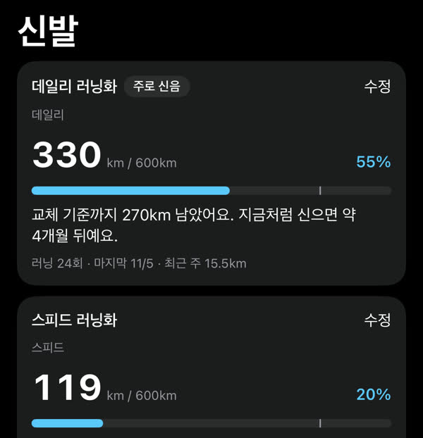
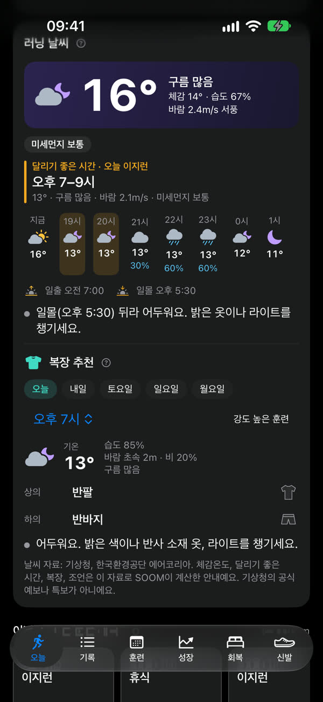
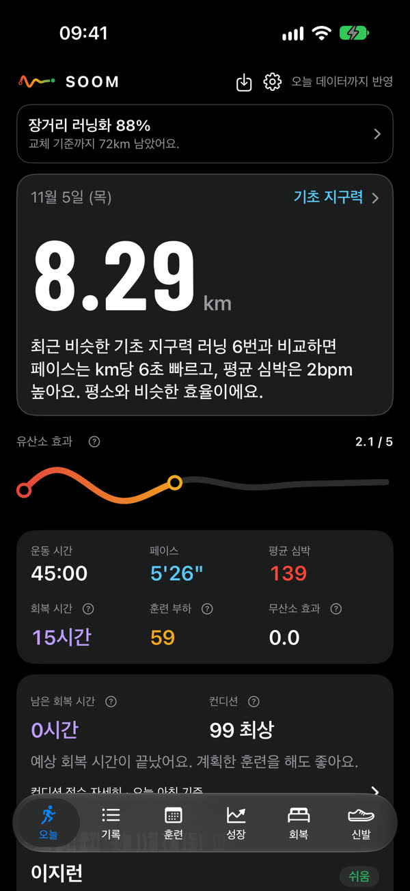
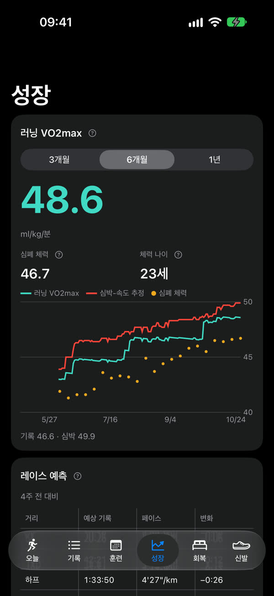
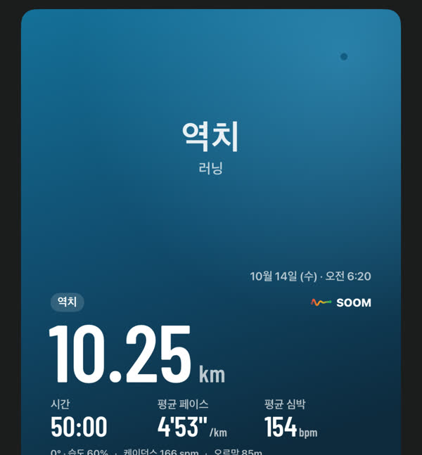
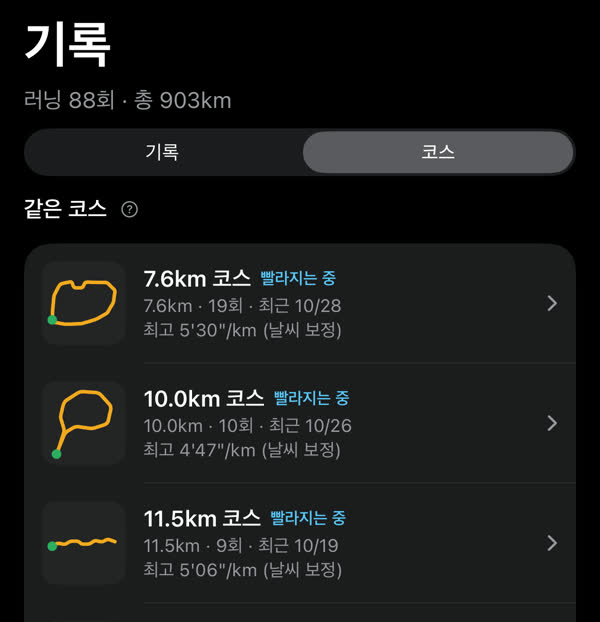
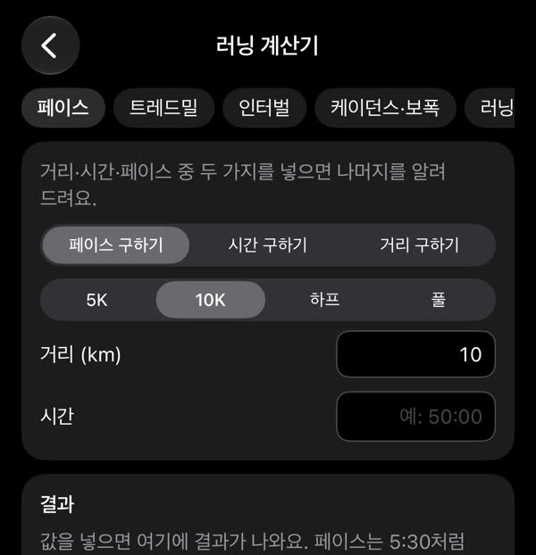
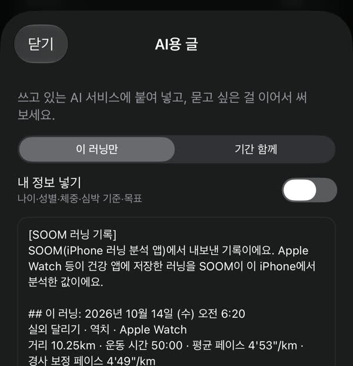
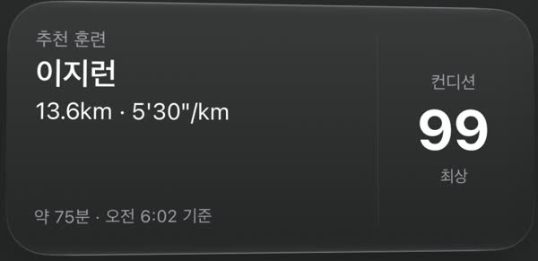

러닝화마다 달린 거리
신발별 거리를 알아서 나눠 쌓고, 교체 기준이 가까워지면 알려 줘요.

Apple Watch 그대로,
기록을 훈련으로
Apple Watch로 달린 기록을 건강 앱에서 읽어 와 iPhone 안에서 분석하고, 오늘 컨디션과 회복 시간, 이번 주 훈련 계획까지 알려 줘요. 가입 없이 써요.



01하루의 흐름
건강 앱에 쌓인 러닝 기록을 SOOM이 읽어 와서 iPhone 안에서 분석해요.
01 · 달리기 전
달리기 좋은 시간과 그 시간에 맞는 복장을 알려 줘요.
날씨 자료: 기상청, 한국환경공단 에어코리아
02 · 달린 뒤
숫자를 말로 풀어 주고, 같은 코스는 알아서 묶어 지난번과 비교해요.
03 · 다음 날
회복 시간은 지난 운동의 강도로, 컨디션은 HRV, 안정 심박, 수면으로 어림해요.
04 · 이번 주
목표 거리만 넣어도 이번 주 추천 계획과 월간 계획표가 나와요.
05 · 한 달 뒤
러닝 VO2max 추이, 레이스 예측, 개인 기록을 모아 봐요.
옆으로 밀어서 더 보기 →
02그리고 매일
러닝화 관리부터 기록 카드, 계산기까지 한 앱에 있어요.
신발별 거리를 알아서 나눠 쌓고, 교체 기준이 가까워지면 알려 줘요.

지도, 심박, 날씨를 넣고 빼서 카드로 저장해요. 지도는 출발·도착 근처만 가리거나 아예 숨길 수 있어요.

같은 길을 달린 기록을 모아 빨라지는 중인지 보여 줘요.

거리, 시간, 페이스 중 두 가지를 넣으면 나머지를 알려 줘요. 트레드밀, 인터벌, 케이던스·보폭도 계산해요.

기록을 내가 쓰는 AI 서비스에 붙여 넣을 글로 만들어 줘요. 복사해서 보내는 건 내가 직접 해요.

실내 달리기 거리가 기계와 다르면, 기계에 나온 거리를 넣어 페이스와 구간을 다시 계산해요.
6.79 → 7.00 km예시: 기계에 나온 거리로 고치기
앱을 열지 않아도 오늘 추천 훈련과 컨디션을 홈 화면에서 봐요.

훈련 계획을 캘린더에 넣어 두고 다른 일정과 함께 봐요.
03개인정보
건강 기록은 건강 앱에, 분석은 내 iPhone 안에서 해요.
SOOM 앱은 이용자의 건강 기록과 개인정보를 가져가지 않아요. 회원가입도, 이용자 정보를 저장하는 서버도 없어요.
앱에 있는 건강 기록과 개인정보를 가져가지 않으니 개발자가 보거나, 분석하거나, 팔 수 없어요. 광고, 이용 분석, 추적 도구도 없어요.
개발자 쪽에 건강 기록을 모아 둔 곳이 없어서, 해킹으로 한꺼번에 새어 나갈 건강 기록도 없어요. 직접 보낸 문의 메일만 개발자 메일함에 남아요(정식 출시 전 베타 기간 예외는 아래 참고).
날씨를 켜면 지난 러닝의 달이나 시각이 날씨 중계기로(위치는 보내지 않아요), 동네 이름을 찾을 약 100m 단위 위치가 Apple로, 지도를 보면 지도 지역이 전달돼요. 심박, 수면, 경로 같은 건강 기록은 보내지 않아요. iCloud 백업을 켜 두면 신발, 계획표 같은 일반 자료는 백업에 포함돼요. 직접 보낸 문의 메일만 개발자 메일함에 남아요. 베타 기간에는 예외로, 신청 이메일 목록이 개발자의 Google 설문지·Gmail에 있고(늦어도 베타가 끝나고 7일 안에 지워요), 직접 보낸 설문 답·피드백과 TestFlight가 자동으로 보내는 충돌·사용 기록도 개발자에게 와요.
개인정보처리방침 전문 보기04만든 이유
SOOM은 러너 한 명이 달리면서 늘 불편했던 네 가지에서 시작했어요.
엠블럼은 달리고 나서 숨이 고르게 가라앉는 길을 그렸어요. 출발의 빨강에서 주황을 지나, 숨이 차분해지는 초록으로.
출발숨이 차분해짐
05베타 테스트
정식 출시 전에 먼저 써 보고 의견을 들려주실 분을 찾아요.
11월 16일부터 2차 선정 전까지 언제든 신청할 수 있어요. 선정 결과는 메일로 알려요. 신청 시작과 선정 날짜는 SOOM 공식 SNS(인스타그램, 유튜브, 스레드, X, 틱톡)에 알려요.
정식 출시 날짜는 아직 정하지 않았어요. 먼저 베타 테스트로 다듬고, 날짜가 정해지면 SOOM 공식 SNS와 이 페이지에 알려요.
내려받기는 무료예요. 무료 체험으로 모든 기능을 먼저 써 보고, 마음에 들면 한 번 결제해서 계속 쓰는 평생 이용권(구독이 아니에요)을 준비하고 있어요. 사지 않아도 기록 목록, 기본 수치, 자료 내보내기는 계속 쓸 수 있어요. 가격은 정식 출시 때 알려요.
iOS 17 이상 iPhone이 필요해요. SOOM은 건강 앱에 저장된 러닝 기록을 읽어서, Apple Watch로 달린 기록이 있으면 가장 자세하게 분석하고 없으면 볼 수 있는 분석 항목이 줄어요. Android 휴대폰은 지원하지 않아요.
아니요. 회원가입도 로그인도 없어요. 앱을 열고 건강 앱 읽기를 허용하면 바로 시작해요. 허용하기 전에 예시 기록으로 먼저 둘러볼 수도 있어요.
러닝 기록 원본은 건강 앱에 있어서, 건강 앱 기록이 새 iPhone으로 옮겨지면 SOOM이 다시 읽어요. 신발, 계획표, 설정은 iCloud나 컴퓨터 백업을 켜 두면 백업에 같이 들어가요. 메모, 프로필 값, 트레드밀 거리는 설정 › 데이터 › 내 자료 옮기기에서 내가 정한 암호를 건 파일로 옮겨요.
SOOM의 수치는 공개된 연구를 바탕으로 훈련에 참고하는 추정치예요. SOOM은 의료기기가 아니며 병을 찾아내거나 진단하지 않아요.
contact@soomrun.com으로 보내 주세요. 자주 생기는 문제와 해결 방법은 지원 페이지에 있어요.
07운영 정보
SOOM is a running analytics app for iPhone. It reads the runs you record with Apple Watch from the Health app and analyzes them on your iPhone: weather for your run, coach notes, recovery and daily condition, a training plan, and long-term progress. No sign-up, no ads, no tracking.
SOOM is preparing for a beta test in the Republic of Korea (applications open November 16, 2026) and is not yet available on the App Store.